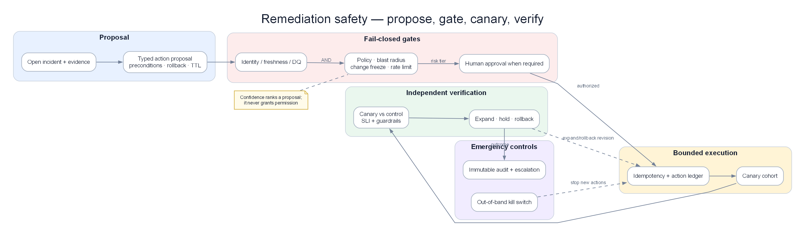

Chapter 13 — Remediation Safety Engine: hành động có giới hạn, phục hồi có chứng minh¶
Automated remediation không phải chạy script nhanh hơn con người. Nó là một safety engine độc lập, biến một đề xuất có bằng chứng thành quyết định có policy, blast radius, canary, verification và rollback. Engine tốt không được thưởng vì thực hiện nhiều action; nó được đánh giá bằng số sự cố giảm MTTR mà không tạo customer harm, không vượt quyền và không che giấu thất bại.

Poster: proposal có kiểu dữ liệu đi qua policy, canary, independent verification và rollback; không có đường tắt từ chat tới production.
Prerequisites¶
- 11 — Root Cause Analysis: đưa ra candidate và causal evidence, không phải quyền hành động.
- 12 — Investigation Engine: cung cấp incident revision, hypothesis, evidence và proposal có giới hạn.
- 08 — Topology & Change Intelligence: cung cấp dependency, ownership, shared resource và change state.
- 14 — Production Engine: quy định degraded mode, audit, disaster recovery và kill switch.
Sau chapter này, người đọc phải làm được gì?¶
Bạn phải thiết kế được một remediation engine trả lời rõ:
- Action nào được phép tồn tại và tham số nào bị giới hạn?
- Evidence còn đủ mới để hành động không?
- Ai hoặc policy nào có quyền phê duyệt?
- Blast radius thật theo traffic và dependency là bao nhiêu?
- Làm sao thử action trên phạm vi đủ nhỏ nhưng vẫn có đủ mẫu để kết luận?
- Tín hiệu nào chứng minh khách hàng phục hồi, tín hiệu nào buộc dừng?
- Làm sao xử lý action trùng, action stale, incident chồng và rollback thất bại?
- Khi telemetry, policy hoặc audit hỏng, engine phải degrade thế nào?
Chapter này không chứa code, YAML, shell command hay hướng dẫn copy–paste. Nội dung tập trung vào decision contract và edge case production.
1. Case xuyên suốt: biết đúng nguyên nhân vẫn có thể sửa sai¶
Investigation Engine chuyển incident INC-8421, revision 7 sang Safety Engine lúc 10:16.
| Fact | Giá trị |
|---|---|
| Checkout success | 71,4% |
| Payment timeout | 24,9% |
| DB pool wait p95 | 1.840 ms |
| Retry amplification | 4,6 request/giao dịch |
| Leading hypothesis | Retry làm cạn connection pool của payment |
| Calibrated confidence | 0,86 |
| Trace coverage | 94% |
| Customer regions | Region A, chủ yếu tenant retail |
Engine nhận ba proposal:
| Proposal | Tác dụng kỳ vọng | Rủi ro production |
|---|---|---|
| Giảm retry từ 3 xuống 1 | Chặn khuếch đại tải | Một số timeout tạm thời không được retry |
| Tăng pool từ 80 lên 160 | Giảm queue ở payment | Đẩy thêm connection xuống shared database, ảnh hưởng refund/fraud |
| Restart toàn bộ payment | Xóa connection kẹt | Reconnect storm và mất capacity đồng thời |
RCA đúng không làm ba action an toàn như nhau. Action thứ hai có vẻ hợp logic nhưng có thể biến pool exhaustion cục bộ thành database outage toàn hệ thống. Action thứ ba có thể làm checkout rơi về 0% trong lúc rollout.
Safety Engine chọn đánh giá proposal giảm retry, nhưng chưa thực thi ngay. Nó còn phải kiểm tra target, policy, traffic, invariant, conflict và khả năng xác minh.
1.1 Sự cố thứ hai lúc 10:37¶
Trong khi payment canary còn chạy, auth-service lỗi certificate. Engine nhận proposal rotate certificate cho INC-8422.
Hai remediation có thể chạy song song nếu write set tách biệt. Tuy nhiên proposal restart shared gateway phải bị chặn vì cùng ảnh hưởng cả payment và auth. Đây là lý do lock toàn cục quá thô còn không lock thì nguy hiểm.
2. Safety Engine là một hệ thống phân quyền, không phải executor¶
Không một thành phần nào được vừa đề xuất, tự duyệt, thực thi và tuyên bố thành công.
| Thành phần | Trách nhiệm | Không được làm |
|---|---|---|
| Investigation Engine | Đưa incident revision, evidence và action catalog ID gợi ý | Gọi hạ tầng production |
| Policy Decision Point | Kiểm tra quyền, risk, freeze, invariant | Sửa proposal để làm nó “hợp lệ” |
| Approval Service | Thu chữ ký đúng thẩm quyền | Duyệt request đã thay đổi |
| Resource Coordinator | Phát hiện write-set conflict và giữ lease | Khóa toàn nền tảng vô thời hạn |
| Bounded Executor | Đạt desired state trong target đã ký | Nhận lệnh tự do hoặc mở rộng selector |
| Verifier | So outcome, mechanism và harm guardrail | Dùng một metric kích hoạt làm bằng chứng duy nhất |
| Audit Service | Lưu chuỗi quyết định bất biến | Phụ thuộc quyền sửa của executor |
| Kill Switch | Dừng action hoặc thu hồi quyền | Nằm cùng failure domain với executor |
Kiến trúc này giả định mọi thành phần đều có thể lỗi: model hallucinate, policy cache stale, operator bấm nhầm, message giao trùng, executor timeout và verifier mất telemetry.
3. Action contract: proposal phải cụ thể và bất biến¶
Proposal không phải câu “hãy giảm retry”. Nó là một đối tượng quyết định với đủ ngữ cảnh.
| Trường | Ví dụ | Lý do |
|---|---|---|
| Incident identity | INC-8421, revision 7 |
Chặn action dựa trên incident cũ |
| Catalog action | Giảm retry policy, version 3 | Không chấp nhận freeform mutation |
| Target identity | Payment workload revision 912, region A | Selector không được tự mở rộng |
| Scope | 5% traffic, tối đa 4 instance | Giới hạn blast radius |
| Parameters | Retry 3 → 1, TTL 15 phút | Range và thời gian rõ ràng |
| Evidence snapshot | Fact IDs lúc 10:16 | Tái tạo được quyết định |
| Evidence expiry | 5 phút | Không hành động trên trạng thái stale |
| Preconditions | DB healthy, revision khớp, verifier fresh | Ngăn race condition |
| Expected outcome | Success tăng ít nhất 8 điểm sau 5 phút | Định nghĩa thành công trước khi chạy |
| Harm guardrails | Duplicate charge, DB CPU, refund error | Phát hiện sửa chỗ này hỏng chỗ khác |
| Abort condition | Success giảm 2 điểm hoặc DB CPU >85% | Dừng tự động |
| Rollback | Trả retry về 3 trong dưới 60 giây | Khả năng đảo ngược đã đo |
| Idempotency key | Incident/revision/action/target | Delivery trùng không tạo thay đổi trùng |
Toàn bộ request được băm và ký sau khi policy/approval hoàn tất. Nếu target, tham số, catalog version, evidence revision hoặc expected outcome đổi, chữ ký hết hiệu lực.
3.1 Desired state thay vì thao tác tương đối¶
Action “scale thêm 2” nguy hiểm khi message được giao lại năm lần. Action nên mô tả trạng thái đích có min/max và TTL. Executor đọc current state, so với precondition rồi hội tụ tới desired state. Cùng idempotency key trả lại kết quả cũ, không thay đổi lần nữa.
3.2 Catalog ID không đủ nếu semantic mơ hồ¶
Catalog entry phải định nghĩa:
- Failure mode mà action xử lý.
- Service/resource class được phép.
- Parameter range.
- Preconditions và invariant.
- Scope tối đa cho từng automation tier.
- Verification window và minimum sample.
- Rollback method, rollback SLO và known failure.
- Credential, owner và approval class.
- Telemetry bắt buộc.
- Ngày review, version và trạng thái retired/active.
Catalog entry không được dùng chung một action “restart service” cho mọi workload. Stateful service, stateless API và queue consumer có rủi ro hoàn toàn khác.
4. State machine: remediation không phải một API call¶
Lifecycle chuẩn:
Proposal → Validate → Risk Assess → Await Approval → Authorize → Acquire Lease → Execute Canary → Verify → Expand → Verify Stable → Succeed
Các nhánh kết thúc:
- Rejected: vi phạm hard gate.
- Expired: incident/evidence/approval không còn mới.
- Conflicted: write set bị action khác giữ.
- Aborted: guardrail bị vi phạm trước hoặc trong execution.
- Inconclusive: không đủ bằng chứng action có tác dụng.
- Rolling Back: đang đảo thay đổi.
- Rolled Back: trở về trạng thái trước đã xác minh.
- Rollback Failed: không thể khôi phục bằng đường chuẩn.
- Partially Successful: giảm impact nhưng chưa đạt recovery criteria.
Mỗi transition có timestamp, actor, input revision, policy version, reason và observed state. Không cho phép nhảy từ Proposal thẳng tới Succeeded.
4.1 Time-of-check/time-of-use¶
Proposal được duyệt lúc 10:18 cho workload revision 912. Lúc 10:19, deployment revision 913 bắt đầu. Dù action chưa chạy, precondition đã sai. Engine chuyển request sang Expired và đánh giá lại. Không suy luận “thay đổi nhỏ chắc không liên quan”.
4.2 Approval cũng hết hạn¶
Operator duyệt một target, parameter và evidence snapshot cụ thể. Approval không phải vé dùng lại. Nếu incident revision đổi hoặc scope tăng từ 5% lên 25%, cần decision mới theo policy.
5. Hard gates: confidence cao không được bù policy fail¶
Một số điều kiện là bắt buộc và không được cộng điểm để bù nhau.
| Gate | Điều kiện đạt | Hành vi khi fail |
|---|---|---|
| Catalog | Action active, signed, đúng service class | Reject |
| Identity | Workload UID/revision khớp | Expire và resolve lại target |
| Evidence freshness | Source chính trong TTL | Expire |
| Telemetry coverage | Đủ outcome và harm guardrail | Detection-only |
| Topology freshness | Shared dependency xác định được | Cấm auto-action phạm vi rộng |
| Business invariant | Không vượt connection/data/security budget | Reject hoặc thu nhỏ scope |
| Change policy | Không vi phạm freeze/maintenance | Chuyển human approval |
| Authorization | Principal có đúng tenant/env/action scope | Reject |
| Conflict | Không có write-set conflict | Queue hoặc từ chối |
| Audit | Audit sink sẵn sàng | Không execute action mới |
| Rollback readiness | Artifact và đường rollback đã kiểm tra | Không auto-execute |
Confidence 0,99 không vượt được audit gate. “Production đang cháy” cũng không biến freeform shell thành hợp lệ; trường hợp khẩn cấp dùng break-glass riêng, có TTL, MFA và hậu kiểm.
6. Risk và blast radius: tính theo hậu quả thật¶
6.1 Bốn trục risk¶
Một mô hình dễ thảo luận gồm:
- Uncertainty: khả năng diagnosis hoặc effect estimate sai.
- Impact: mức độ quan trọng của customer journey/resource.
- Irreversibility: khó quay lại trạng thái trước tới đâu.
- Exposure: bao nhiêu traffic, tenant, region và dependency bị chạm.
Có thể dùng tích số để so proposal cùng lớp, nhưng không để điểm trung bình che hard risk. Shared database, identity, security control, data mutation và multi-region action cần risk floor.
6.2 Ví dụ giảm retry trên canary¶
| Trục | Điểm 0–1 | Giải thích |
|---|---|---|
| Uncertainty | 0,14 | Hypothesis confidence 0,86 |
| Impact | 0,70 | Payment nằm trên đường doanh thu |
| Irreversibility | 0,10 | Config có TTL, rollback nhanh |
| Exposure | 0,047 | 5% instance tương ứng 4,7% request |
Điểm thô thấp, nhưng engine vẫn kiểm tra shared DB và duplicate-charge invariant. Action không trở thành “an toàn tuyệt đối”; nó chỉ đủ điều kiện auto-canary trong scope nhỏ.
6.3 Ví dụ tăng pool gấp đôi¶
| Yếu tố | Quan sát |
|---|---|
| Target trực tiếp | Payment pool |
| Downstream thật | Shared database phục vụ payment, refund và fraud |
| Connection delta tối đa | +80 mỗi instance × 40 instance = +3.200 |
| DB connection headroom | Chỉ còn khoảng 900 |
| Kết luận | Vi phạm invariant trước khi cần tính confidence |
Action bị reject. Đây là lý do blast radius không thể tính bằng “một config ở một service”.
6.4 Traffic exposure khác instance exposure¶
5% pod không nhất thiết là 5% traffic. Một pod gateway có sticky tenant lớn có thể giữ 30% request. Engine dùng observed traffic, tenant mix và dependency fan-out. Khi mapping không chắc, lấy upper bound bảo thủ.
6.5 Risk floor¶
| Action class | Risk floor |
|---|---|
| Restart stateless canary có replica dư | Thấp–trung bình |
| Thay retry/circuit breaker có TTL | Trung bình |
| Scale connection tới shared DB | Cao |
| Thay auth/security policy | Cao, cần dual control |
| Data/schema mutation | Rất cao, thường không autonomous |
| Multi-region traffic shift | Rất cao |
Không dùng confidence để hạ risk floor.
7. Chọn automation tier theo action, không theo “độ trưởng thành chung”¶
| Tier | Điều kiện | Ví dụ |
|---|---|---|
| Observe only | Action mới, evidence yếu, rollback chưa đo | Đề xuất cho operator |
| Human approved canary | Shared dependency hoặc impact trung bình | Giảm retry payment 5% |
| Auto-canary | Reversible, scope nhỏ, verifier khỏe, pass replay | Restart một stateless replica lỗi |
| Auto-expand | Canary/control chứng minh effect và guardrail ổn | Mở từ 5% lên 25% |
| Dual control | Security, data, multi-region, irreversible | Rotate root credential, schema change |
| Prohibited | Không có catalog/rollback/audit | Freeform command từ LLM |
Một tổ chức có thể tự động restart cache nhưng vẫn cấm tự động sửa database. Không có một con số “Level 4” cho mọi action.
8. Canary là một thí nghiệm an toàn, không chỉ triển khai ít¶
8.1 Canary quá nhỏ không tạo bằng chứng¶
Nếu canary 1% chỉ nhận 12 request/phút, sau 5 phút có 60 mẫu. Chênh lệch success 8 điểm có thể chỉ là nhiễu. Canary 20% đủ mẫu nhưng quá nguy hiểm giữa outage.
Trong case payment, 5% traffic có khoảng 620 request/phút. Sau 5 phút có gần 3.100 request, đủ để phát hiện mức cải thiện tối thiểu 8 điểm với độ tin cậy vận hành hợp lý.
8.2 Control cohort¶
| Cohort | Trước action | Sau 5 phút | Thay đổi |
|---|---|---|---|
| Canary retry 1 | 71,8% | 91,2% | +19,4 điểm |
| Control retry 3 | 71,5% | 74,0% | +2,5 điểm |
| Phần còn lại | 71,3% | 73,1% | +1,8 điểm |
Chênh canary–control gần 16,9 điểm là evidence tốt hơn việc toàn hệ thống cùng cải thiện. Nếu cả canary và control tăng 18 điểm, có thể traffic tự giảm hoặc dependency hồi phục; action bị đánh dấu Inconclusive.
8.3 Cohort phải so sánh được¶
Canary và control nên gần nhau về:
- Region/AZ.
- Tenant mix.
- Request type.
- Workload revision.
- Traffic weight.
- Dependency shard.
Không so canary tenant nhỏ với control tenant enterprise rồi kết luận action có tác dụng.
8.4 Progressive expansion¶
Mỗi bước 5% → 25% → 50% → 100% là một decision mới. Engine kiểm tra lại evidence freshness, conflict, sample, guardrail và approval policy. Không cấp một approval 5% rồi tự hiểu là được lên 100%.
Hold window cần đủ dài để thấy delayed harm: duplicate payment, queue backlog hoặc memory leak có thể xuất hiện sau khi latency đã tốt.
9. Verification: chứng minh recovery bằng ba tầng tín hiệu¶
9.1 Outcome khách hàng¶
- Checkout success.
- Latency theo percentile.
- Giao dịch hoàn tất trên mỗi phút.
- Error-budget burn.
- Tenant/region bị ảnh hưởng.
9.2 Mechanism¶
- Retry amplification giảm.
- DB pool wait giảm.
- Connection acquire timeout giảm.
- Queue depth hoặc saturation trở lại vùng an toàn.
9.3 Harm guardrails¶
- Duplicate charge.
- Refund/fraud error.
- Database CPU và connection usage.
- Error rate ở dependency khác.
- Capacity và queue sau action.
Action chỉ thành công khi outcome cải thiện, cơ chế thay đổi đúng hướng và guardrail không xấu.
9.4 Recovery giả do traffic giảm¶
Success rate có thể tăng khi request volume giảm từ 10.000 xuống 1.000/phút. Vì vậy verifier xem cả ratio, count và control. Nếu số giao dịch thành công tuyệt đối vẫn thấp, chưa thể tuyên bố khách hàng hồi phục.
9.5 Hai cửa sổ thời gian¶
- Cửa sổ nhanh khoảng 2–5 phút để bắt regression nghiêm trọng.
- Cửa sổ chậm khoảng 15–30 phút để loại dao động và delayed harm.
Ngưỡng phụ thuộc service. Không dùng ba điểm metric cho mọi action.
9.6 Partial success¶
Giảm retry đưa checkout từ 71,4% lên 91,2%, trong khi SLO recovery là 98,5%. Engine ghi Partially Successful:
- Giữ mitigation có TTL nếu guardrail ổn.
- Không đóng incident.
- Không xóa hypothesis còn lại.
- Tiếp tục điều tra phần 7,3 điểm thiếu.
“Tốt hơn” không đồng nghĩa “đã sửa gốc”.
10. Rollback: một action production độc lập¶
10.1 Rollback phải được chứng minh trước¶
Catalog cần số liệu:
- Rollback success rate.
- Thời gian p50/p95/p99.
- Dependency cần để rollback.
- Trạng thái không thể đảo.
- Artifact/version trước có còn hợp lệ không.
- Điều gì xảy ra nếu rollback chạy trùng.
Nói “config có thể rollback” là chưa đủ.
10.2 Rollback trigger¶
Rollback tự động khi:
- Customer outcome giảm quá abort threshold.
- Harm guardrail vi phạm.
- Executor tạo observed state khác desired state.
- Verifier mất tín hiệu trong action có policy fail-safe rollback.
- Lease/action TTL hết mà chưa verify.
- Dependency mới trở nên unhealthy.
10.3 Rollback cũng có thể gây hại¶
Nếu traffic đã thích nghi với retry 1, trả ngay về retry 3 có thể tái tạo storm. Rollback đôi khi phải staged hoặc dùng safe state khác trạng thái ban đầu. “Quay về trước” không luôn đồng nghĩa an toàn.
10.4 Rollback failed¶
Khi API control plane lỗi hoặc revision cũ không tương thích:
- Dừng mọi expansion cùng write set.
- Chuyển action sang Rollback Failed, không retry vô hạn.
- Kích hoạt kill switch hoặc recovery path độc lập.
- Page service owner và platform owner.
- Giữ immutable evidence về observed state.
- Chỉ chạy recovery action khác nếu đã có catalog và precondition riêng.
Rollback failure phải là game-day bắt buộc, không phải chú thích cuối runbook.
10.5 Irreversible action¶
Schema drop, data rewrite, key revocation hoặc destructive cleanup không có rollback thật. Backup restore là disaster recovery, không phải rollback tức thời. Các action này thường chỉ được đề xuất, cần dual control và kế hoạch recovery riêng.
11. Concurrent incident và resource coordination¶
11.1 Read set và write set¶
Mỗi action khai báo tài nguyên đọc và ghi.
| Incident/action | Read set | Write set | Quyết định |
|---|---|---|---|
| Payment giảm retry | DB health, checkout | Payment retry config | Có thể tiếp tục |
| Auth rotate certificate | Cert state, login | Auth secret và auth rollout | Có thể chạy riêng |
| Restart shared gateway | Payment/auth traffic | Gateway replicas | Bị conflict |
| Tăng DB connections | DB capacity | Shared DB connection budget | Bị invariant chặn |
11.2 Không dùng global lock¶
Global lock “một thời điểm chỉ một remediation” làm incident auth phải chờ payment, kéo dài impact. Lock theo resource/service/config key cho phép fault độc lập xử lý song song.
11.3 Lease phải có TTL¶
Executor chết không được giữ lock mãi. Lease có owner, fencing token và TTL. Executor cũ tỉnh lại với token cũ không được ghi state sau executor mới.
11.4 Hai action khác nhau nhưng cùng hậu quả¶
Payment scale up và database maintenance có write set tên khác nhưng cùng tiêu thụ connection budget. Coordinator phải hiểu shared invariant, không chỉ khóa theo resource ID.
12. Delivery trùng, timeout và trạng thái không chắc chắn¶
12.1 At-least-once delivery¶
Message bus có thể giao action năm lần. Idempotency key và desired state bảo đảm chỉ có một thay đổi logic. Audit vẫn ghi duplicate delivery để vận hành thấy transport issue.
12.2 Executor timeout không có nghĩa action fail¶
API response timeout có thể xảy ra sau khi production đã đổi. Executor không được gửi lại mù. Nó đọc observed state, đối chiếu action digest rồi quyết định complete, continue hay conflict.
12.3 Split brain¶
Hai executor nghĩ mình giữ lease có thể tạo action cạnh tranh. Fencing token tại điểm ghi là bắt buộc; distributed lock chỉ ở coordinator không đủ nếu target system không kiểm tra generation.
12.4 Stale command¶
Action nằm trong queue 11 phút do Kafka lag. Dù approval còn chữ ký, evidence TTL đã hết. Engine expire và không chạy. Queue recovery không được biến mọi backlog thành mutation storm.
13. Khi RCA sai hoặc chưa đầy đủ¶
13.1 RCA sai nhưng metric tình cờ tốt¶
Traffic giảm đúng lúc canary restart. Outcome canary và control cùng tăng, mechanism không đổi. Verifier ghi Inconclusive và rollback/giữ scope theo policy; không expand.
13.2 Action đúng triệu chứng, sai gốc¶
Scale up làm latency giảm nhưng memory leak tiếp tục. Action có thể là mitigation hữu ích, nhưng incident vẫn open và TTL buộc đánh giá lại. Report phân biệt mitigation với permanent fix.
13.3 Hai root cause đồng thời¶
Retry storm và một shard database chậm có thể cùng tồn tại. Giảm retry cải thiện phần lớn traffic nhưng một tenant vẫn lỗi. Engine không ép một action giải thích toàn incident; correlation/investigation có thể split fault partition mới.
13.4 Confidence cao nhưng action effect không chắc¶
Biết certificate hết hạn chắc chắn không có nghĩa mọi cách rotate certificate đều an toàn. Action suitability phụ thuộc rollout, trust chain, cache và rollback, tách khỏi root-cause confidence.
14. Telemetry hỏng trong lúc remediation¶
14.1 Verifier mất metric¶
Không có evidence thành công thì không auto-expand. Policy theo action class:
- Action dễ đảo: rollback về safe state.
- Rollback rủi ro: giữ canary nhỏ, chuyển Human Only.
- Harm signal mất: dừng ngay action mới vì không biết đang gây hại hay không.
14.2 Missing không được coi là zero¶
Duplicate-charge metric không có sample không có nghĩa duplicate charge bằng 0. Verifier cần freshness và coverage guard.
14.3 Audit sink hỏng¶
Engine chuyển Detection Only cho action mới. Action đang chạy có thể tiếp tục tới safe stopping point hoặc rollback theo catalog. Không cho phép “ghi audit sau” nếu không có buffer bất biến đã thiết kế trước.
14.4 Topology stale¶
Không biết target dùng shared database nào thì cấm expansion. Có thể giữ canary nếu observed guardrail đầy đủ và policy cho phép, nhưng risk bị nâng.
15. Human approval lúc 3 giờ sáng¶
Approval UI phải hỗ trợ quyết định, không đổ telemetry cho on-call.
15.1 Một màn hình cần gì?¶
- Customer impact, thời điểm bắt đầu và trend.
- Leading hypothesis, calibrated confidence và contradiction mạnh nhất.
- Action catalog, parameter, target, traffic exposure và TTL.
- Shared dependency và business invariant.
- Expected outcome, sample/window và control cohort.
- Abort/rollback condition.
- Người sở hữu, policy và change đang diễn ra.
- Evidence freshness countdown.
15.2 Lựa chọn có giới hạn¶
Operator có thể:
- Approve once.
- Reject với reason.
- Reduce scope trong range cho phép rồi đánh giá lại.
- Escalate dual control.
- Yêu cầu thêm evidence.
Không có “approve all future actions”. Tăng scope hoặc sửa parameter làm proposal có revision mới.
15.3 Chống approval stale¶
Nếu operator mở card ở revision 7 nhưng incident đã sang revision 9, nút approve bị khóa. UI hiển thị delta: RCA đổi, target đổi hay telemetry mất. Người trực không ký vào một sự thật đã cũ.
15.4 Fatigue và rubber stamping¶
Nếu 95% proposal đều được duyệt, chưa chắc policy tốt; có thể UI tạo thói quen bấm. Đo thời gian đọc, rejection reason, scope reduction và near-miss. Action lặp lại đủ an toàn mới cân nhắc auto-canary, không thúc người trực duyệt nhanh hơn.
16. Security và quyền lực của remediation¶
16.1 Không dùng credential chung¶
Credential tách theo environment, action class, tenant và target. Executor chỉ nhận token ngắn hạn sau authorization, không giữ cloud admin key.
16.2 LLM không chạm credential¶
LLM chỉ đề xuất catalog ID và rationale. Nó không thấy secret, không tạo command và không gọi executor. Prompt injection trong log/runbook không thể mở rộng tool scope.
16.3 Target binding¶
Authorization gắn với immutable workload identity, không chỉ tên service. Nếu tên bị tái sử dụng hoặc selector match thêm resource, execution fail closed.
16.4 Separation of duties¶
Người viết catalog action nguy hiểm không tự duyệt policy và tự phê chuẩn production execution. Security/data action cần dual control từ domain owner phù hợp.
16.5 Break-glass¶
Break-glass có:
- MFA và identity rõ.
- Scope/TTL tối thiểu.
- Reason bắt buộc.
- Notification độc lập.
- Audit bất biến.
- Review sau sự cố.
Nó không phải nút bỏ qua mọi kiểm soát.
17. Kill switch và circuit breaker của chính engine¶
17.1 Ba mức dừng¶
- Global: dừng action mới toàn nền tảng.
- Scoped: dừng theo tenant, region, service hoặc action class.
- Credential: thu hồi executor identity/admission permission.
17.2 Failure domain độc lập¶
Kill switch không dùng cùng controller, queue và IAM path với executor. Nếu remediation storm làm Kafka nghẽn, lệnh dừng vẫn phải tới được enforcement point.
17.3 Circuit breaker tự động¶
Engine tự chuyển sang Detection Only khi:
- Harmful/rollback rate vượt ngưỡng.
- Action volume tăng bất thường.
- Policy/model revision mới tạo disagreement lớn.
- Audit/verifier/identity dependency lỗi.
- Nhiều action cùng class thất bại liên tiếp.
- Cost hoặc queue age vượt safety budget.
Circuit breaker mở không được tắt detection và paging.
18. Audit: tái dựng “ai biết gì, quyết định gì, production đổi g씶
Audit chain nối:
Incident revision → Evidence snapshot → Hypothesis/proposal → Policy decision → Approval → Action digest → Lease → Executor observation → Verification → Expansion/Rollback → Closure
18.1 Mỗi record cần gì?¶
- Event-time và processing-time.
- Actor/principal và delegated authority.
- Input/output digest.
- Policy/catalog/model version.
- Target identity và observed revision.
- Reason code.
- Link tới artifact đã redact.
- Previous record hash hoặc cơ chế integrity tương đương.
18.2 Audit không phải log debug¶
Log debug có thể rotate, chứa secret và không bảo đảm thứ tự. Audit là append-only, retention theo policy, quyền sửa tách khỏi executor và có thể export cho review.
18.3 Privacy¶
Không lưu raw payment data để “đầy đủ bằng chứng”. Lưu aggregate, tokenized identifier và artifact reference theo least privilege. Điều tra được không đồng nghĩa sao chép dữ liệu nhạy cảm.
19. Verification đối với các action class thường gặp¶
19.1 Restart stateless instance¶
Precondition:
- Replica dư đủ tải.
- Instance không giữ state độc quyền.
- Pod lỗi khác control pod khỏe.
- Restart rate limit chưa vượt.
Success:
- Readiness thật và request success hồi phục.
- Không tạo reconnect/traffic storm.
- Queue không tăng.
Không dùng khi nhiều replica cùng lỗi do dependency chung; restart hàng loạt chỉ khuếch đại outage.
19.2 Scale out¶
Precondition:
- Bottleneck thực sự ở capacity của target.
- Downstream còn headroom.
- Scheduler/quota đủ.
- Workload có thể scale ngang.
Success:
- Queue/latency giảm cùng throughput tăng.
- Downstream không bão hòa.
Không dùng cho deadlock, bad query hoặc retry storm chưa chặn; scale có thể khuếch đại tải.
19.3 Giảm retry¶
Precondition:
- Retry đang khuếch đại lỗi transient.
- Business semantics cho phép giảm attempt.
- Không làm mất thao tác quan trọng không idempotent.
Success:
- Request amplification và pool wait giảm.
- Transaction completion tăng.
- Không tăng permanent failure quá guardrail.
19.4 Circuit breaker dependency¶
Precondition:
- Có fallback hợp lệ.
- Dependency lỗi có scope rõ.
- Fallback không vi phạm correctness.
Success:
- Upstream latency/error giảm.
- Fallback quality trong ngưỡng.
- Dependency có thời gian hồi phục.
Không dùng cho payment authorization nếu fallback đồng nghĩa chấp nhận giao dịch không kiểm tra.
19.5 Traffic shift¶
Precondition:
- Region đích đủ capacity và dữ liệu đồng bộ.
- Session/DNS/cache behavior đã hiểu.
- Compliance cho phép dữ liệu đi region mới.
Success:
- Customer outcome ở cohort shift tốt hơn.
- Region đích không tiến tới saturation.
- Không tạo split-brain dữ liệu.
19.6 Feature/config rollback¶
Precondition:
- Version trước tương thích schema và dependency hiện tại.
- Cohort lỗi khớp rollout.
- Artifact trước còn được ký và available.
Success:
- Cohort rollback hội tụ về control.
- Không phá data written bởi version mới.
20. Edge case production khó nhưng thường gặp¶
20.1 Retry storm sau remediation¶
Restart hoặc traffic shift làm hàng nghìn client retry cùng lúc. Engine cần jitter, ramp rate và downstream connection guard. Verification quan sát amplification, không chỉ health của target.
20.2 Capacity cliff¶
Traffic tạm giảm khiến autoscaler đề xuất scale down trong incident. Khi traffic quay lại, capacity thiếu và lỗi thứ hai xuất hiện. Policy cấm auto scale-down khi incident active trừ workload class đã chứng minh an toàn.
20.3 Recovery trùng với action¶
Dependency tự hồi đúng lúc canary chạy. Control group giúp nhận biết action không phải nguyên nhân. Nếu không có control, kết luận Inconclusive thay vì nhận công.
20.4 Action overlap với deploy¶
Deploy mới bắt đầu giữa approval và execution. Target revision mismatch làm request expire. Không merge remediation vào deploy đang chạy một cách ngầm định.
20.5 Queue backlog bùng sau recovery¶
Service xanh nhưng backlog cũ đổ xuống database, tạo outage thứ hai. Verification phải bao gồm queue age, drain rate và downstream headroom qua cửa sổ chậm.
20.6 Partial regional recovery¶
Metric global đạt ngưỡng vì region khỏe có traffic lớn, trong khi region A còn lỗi. Success criteria đo theo affected cohort, không chỉ aggregate.
20.7 Metric gaming¶
Action drop request sớm có thể làm latency giảm đẹp nhưng success/count xấu. Outcome set phải ngăn tối ưu một metric đơn.
20.8 Hidden shared dependency¶
Topology không ghi payment và refund dùng cùng credential quota. Action payment ăn hết quota làm refund lỗi. Shared invariant và topology freshness là gate; unknown dependency làm risk tăng.
20.9 Manual action ngoài engine¶
Operator sửa production trực tiếp trong lúc workflow đang chạy. Change observer phát external mutation, invalidates lease/precondition và pause automation. Engine không được ghi đè để “đạt desired state”.
20.10 Operator revoke giữa execution¶
Approval bị thu hồi sau canary nhưng trước expansion. Expansion bị cấm; canary được rollback hoặc giữ theo policy. Authorization phải được kiểm tra mỗi stage, không chỉ lúc bắt đầu.
21. Game day và replay: chứng minh safety trước production¶
21.1 Bộ kịch bản tối thiểu¶
- Incident kéo dài 65 phút, evidence revision đổi nhiều lần.
- Auth fault nổ chồng phút 37.
- Traffic tự giảm đúng lúc action.
- Verifier mất metric bảy phút.
- Action message giao trùng năm lần.
- Deployment chen giữa approval và execution.
- Executor timeout sau khi target đã đổi.
- Rollback API thất bại.
- Topology stale che shared dependency.
- Audit sink unavailable.
- Prompt injection gợi ý bỏ policy.
- Operator manual change tranh chấp desired state.
21.2 Expected result phải định trước¶
Mỗi scenario có:
- Mode transition mong đợi.
- Action/state transition hợp lệ.
- Customer harm guardrail.
- Page/escalation mong đợi.
- Audit artifact cần xuất hiện.
- Recovery/rollback deadline.
Không đánh giá game day bằng cảm nhận “có vẻ hệ thống xử lý được”.
21.3 Replay thời điểm lịch sử¶
Engine chỉ được thấy evidence đã tồn tại tại từng thời điểm. Không dùng postmortem conclusion để quyết định ở phút thứ năm. Đây là cách tránh benchmark gian lận vì hindsight.
21.4 Fault injection vào safety plane¶
Không chỉ phá workload; phải phá policy cache, audit, lease coordinator, notification, verifier và identity provider. Safety Engine cần chứng minh fail closed cho mutation nhưng vẫn giữ detection/handoff.
22. Metrics vận hành đúng¶
Automation rate một mình là metric nguy hiểm. Cần bộ cân bằng:
| Metric | Ý nghĩa |
|---|---|
| Eligible action rate | Bao nhiêu incident thực sự thuộc catalog an toàn |
| Proposal acceptance | Proposal có hữu ích với on-call không |
| Time-to-safe-mitigation | Bao lâu đạt cải thiện đã xác minh |
| Harmful action rate | Action làm customer/invariant xấu đi |
| False success rate | Engine tuyên bố thành công nhưng outcome không hồi |
| Canary abort rate | Canary chặn được regression sớm ra sao |
| Rollback success và latency | Khả năng đảo action thật |
| Stale action rejection | TOCTOU guard hoạt động không |
| Duplicate side effect | Idempotency có hiệu lực không |
| Human override/revoke | Policy có lệch thực tế không |
| Audit completeness | Có tái dựng toàn lifecycle không |
| Detection-only time | Safety dependency có thiếu ổn định không |
22.1 Slice bắt buộc¶
Đo riêng theo:
- Action class.
- Service tier.
- Region/tenant.
- Automation tier.
- Telemetry quality.
- Model/policy/catalog version.
- Giờ làm việc và ngoài giờ.
Tỷ lệ harm trung bình thấp có thể che một action class rất nguy hiểm.
22.2 Near-miss¶
Action bị canary abort trước khi gây impact rộng là near-miss cần học, không phải “hệ thống hoạt động bình thường”. Review vì sao offline replay/policy không bắt sớm hơn.
23. Rollout Safety Engine¶
Giai đoạn 1 — Catalog và audit only¶
Chuẩn hóa action, target, precondition, verification và rollback. Mọi execution vẫn do người làm nhưng đi qua audit contract.
Giai đoạn 2 — Proposal shadow¶
Engine đánh giá risk và policy song song, không can thiệp. So với quyết định thật để tìm rule sai và missing invariant.
Giai đoạn 3 — Human-approved canary¶
Chỉ action reversible, scope nhỏ, verifier khỏe. Mỗi proposal có expiry và approval rõ.
Giai đoạn 4 — Auto-canary¶
Chỉ catalog entry đã pass replay/game day và có rollback reliability cao. Expansion vẫn cần người hoặc evidence gate nghiêm ngặt.
Giai đoạn 5 — Bounded closed loop¶
Auto-canary và progressive expansion cho failure mode lặp lại, với circuit breaker toàn lớp. Không mở rộng sang irreversible action chỉ vì action đơn giản đã thành công.
Mỗi model/policy/catalog revision đi qua shadow, canary và rollback giống code production.
24. Production acceptance criteria¶
Trước khi bật autonomous action, cần chứng minh:
| Cổng | Điều kiện pass |
|---|---|
| Freeform execution | Không tồn tại đường từ model tới lệnh tự do |
| Authorization | Target/action/environment bị ràng buộc và token ngắn hạn |
| Evidence freshness | Action stale bị từ chối 100% trong replay |
| Idempotency | Delivery trùng không tạo thêm side effect |
| Conflict control | Concurrent action cùng invariant không chạy chồng |
| Canary | Đủ sample và có control/benchmark phù hợp |
| Verification | Outcome + mechanism + harm guardrail |
| Rollback | Đã đo success rate và p95, có test failure path |
| Audit | Tái dựng đủ incident-to-closure chain |
| Kill switch | Hoạt động khi queue/controller chính hỏng |
| Degraded mode | Audit/verifier lỗi thì mutation dừng, detection còn |
| Security | Prompt/data injection không đổi tool/action scope |
| Human UX | Approval stale bị khóa, scope change cần duyệt lại |
Ngưỡng khởi đầu bảo thủ:
| Chỉ số | Mục tiêu |
|---|---|
| Unauthorized execution | 0 |
| Action ngoài catalog | 0 |
| Severity-1 do autonomous action | 0 |
| Stale action executed | 0 |
| Duplicate side effect | 0 |
| Missing telemetry bị coi là success | 0 |
| Audit reconstruction completeness | 100% |
| Rollback success cho auto-eligible action | ≥99,9% |
| Regression bị bắt trước expansion | ≥99% golden scenarios |
25. Checklist thiết kế cho từng action catalog entry¶
Mục đích¶
- Failure mode cụ thể là gì?
- Action chữa root cause hay chỉ mitigation?
- Khi nào tuyệt đối không dùng?
Target và scope¶
- Immutable identity nào được phép?
- Traffic/tenant/region exposure tối đa?
- Có shared dependency hoặc quota nào?
Preconditions¶
- Evidence nào phải fresh?
- Topology/change revision nào phải khớp?
- Business invariant nào là hard gate?
- Có action/manual change nào conflict?
Execution¶
- Desired state là gì?
- Idempotency và fencing hoạt động thế nào?
- Timeout/retry semantics ra sao?
- Action TTL và safe stopping point ở đâu?
Verification¶
- Customer outcome nào phải cải thiện?
- Mechanism signal nào phải đổi?
- Harm guardrail nào không được xấu?
- Minimum sample, fast/slow window và control là gì?
Rollback¶
- Trạng thái safe là trạng thái nào?
- Rollback có staged không?
- Success rate/p95 đã đo chưa?
- Nếu rollback fail, recovery và escalation là gì?
Governance¶
- Automation tier và risk floor?
- Ai viết, review và approve?
- Policy/catalog expiry?
- Audit retention và data classification?
Nếu câu trả lời chỉ là “runbook có hướng dẫn”, action chưa đủ chuẩn để tự động hóa.
26. Anti-patterns cần loại bỏ¶
“Confidence trên 80% thì execute”¶
Sai vì confidence không chứa impact, irreversibility, exposure, policy và rollback readiness.
“Action có rollback nên an toàn”¶
Sai nếu rollback chưa đo, phụ thuộc cùng control plane hoặc trạng thái cũ không còn tương thích.
“Canary 1 pod là đủ”¶
Sai nếu pod đó không đại diện traffic hoặc không đủ sample.
“Metric xanh là thành công”¶
Sai nếu traffic giảm, metric missing hoặc customer outcome chưa hồi.
“Chỉ cho phép script trong Git là an toàn”¶
Script versioned vẫn có thể selector rộng, quyền cao, precondition stale và không verification.
“Một remediation tại một thời điểm”¶
Global lock làm chậm incident độc lập; cần resource/invariant coordination.
“Operator đã duyệt thì engine không chịu trách nhiệm”¶
Approval không thay hard gate, target binding, canary và verifier.
“Tăng automation rate là tiến bộ”¶
Tiến bộ là giảm time-to-safe-mitigation và harm, không phải tăng số mutation.
Kết luận¶
Một Remediation Safety Engine production vận hành theo chuỗi:
proposal có revision → hard gates → risk và blast radius → approval phù hợp → resource lease → canary đủ mẫu → verification outcome/mechanism/harm → progressive expansion hoặc rollback → audit closure.
Trong case payment, engine không tăng gấp đôi pool dù RCA nói pool exhaustion, vì connection budget của shared database sẽ bị phá. Nó chọn giảm retry trên 5% traffic, so với control, quan sát checkout success tăng 19,4 điểm, retry và pool wait giảm, đồng thời kiểm tra duplicate charge và refund. Kết quả mới là Partial Success vì checkout chưa đạt 98,5%. Khi auth lỗi nổ chồng, engine dùng write set riêng; proposal restart gateway bị chặn do conflict. Khi telemetry hoặc audit hỏng, mutation dừng nhưng detection vẫn tiếp tục.
Đó là khác biệt giữa “tự động chạy runbook” và một safety engine thật sự: không chỉ biết làm gì, mà biết khi nào không được làm, làm bao nhiêu là đủ, làm sao biết có tác dụng và làm gì khi chính remediation thất bại.
Tài liệu liên quan¶
Acceptance contract của chapter¶
Chapter này tuân theo Acceptance Template chung: capability chỉ được coi là hoàn tất khi có scope, input quality, timeline scenario, expected output, negative control, hard gates, thresholds và evidence artifact tái tạo được. Checklist hoặc demo không thay thế benchmark/replay.